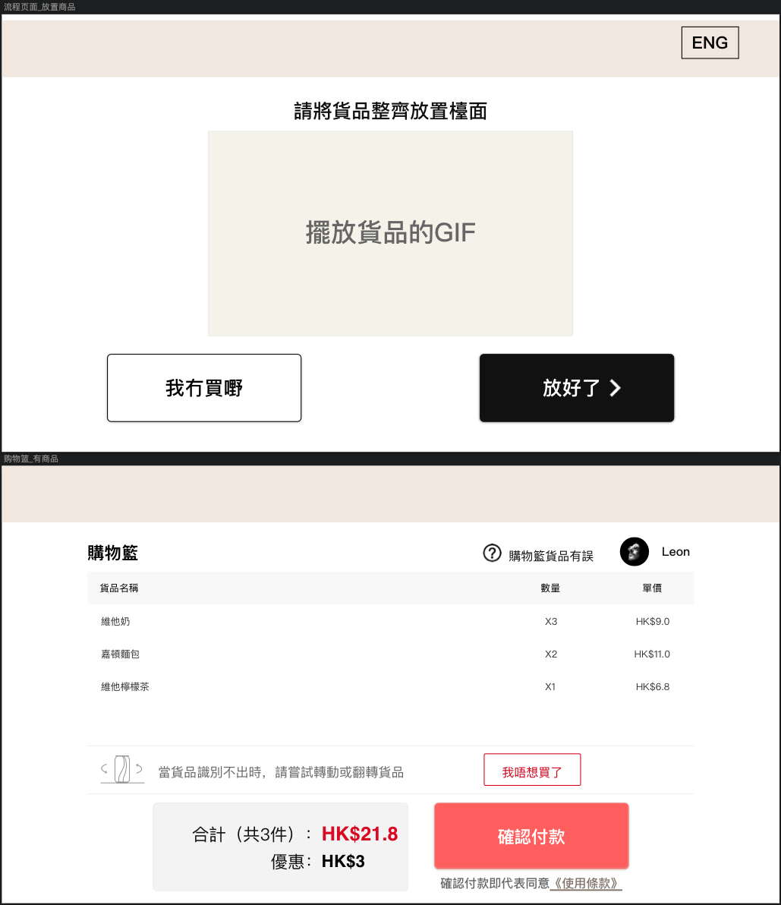
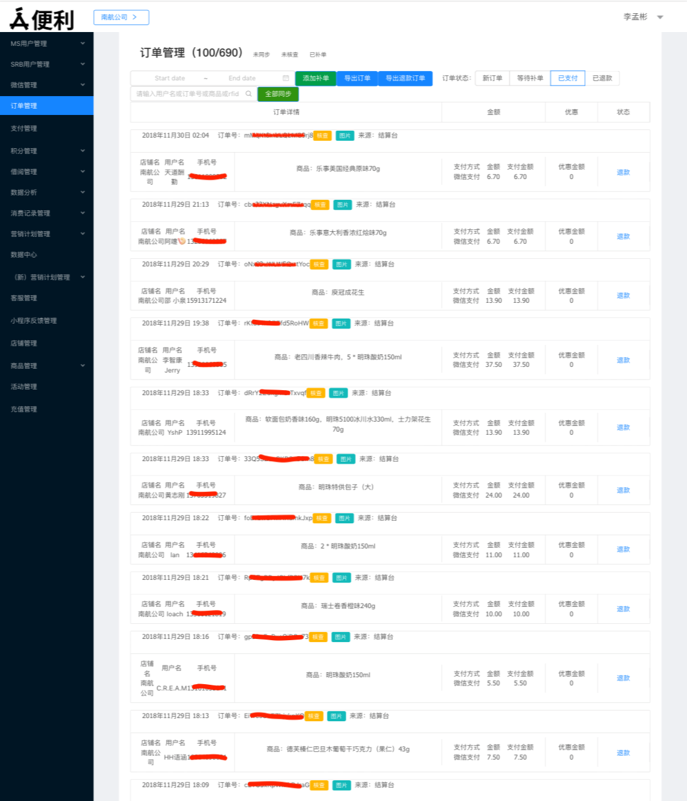
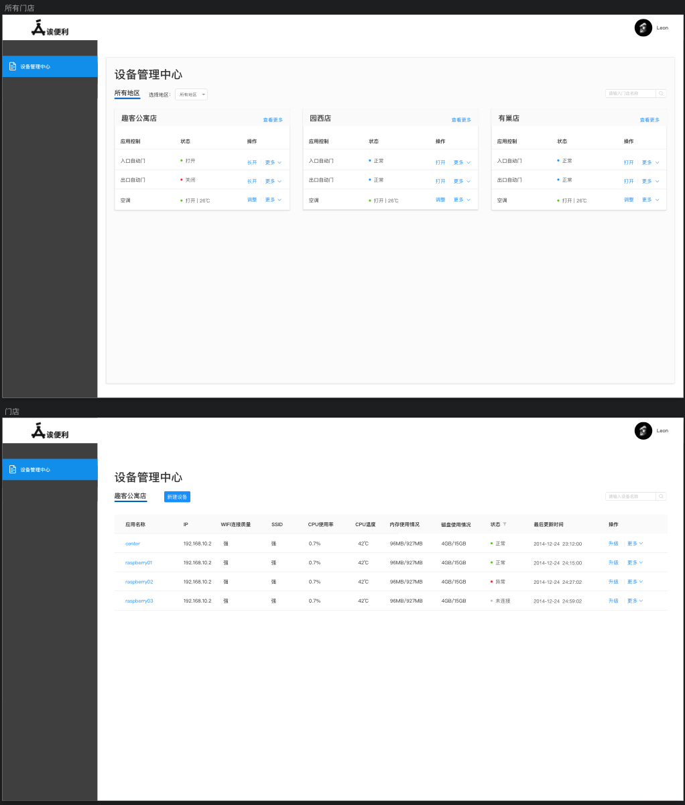
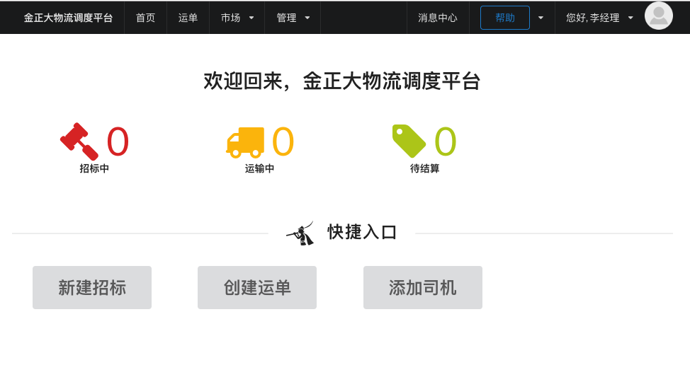
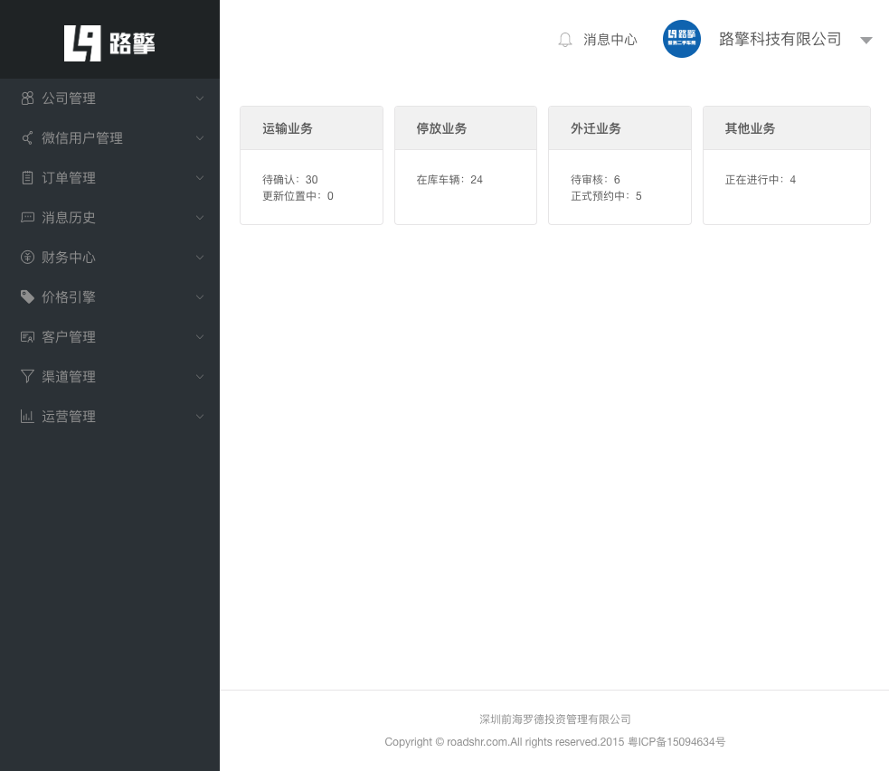
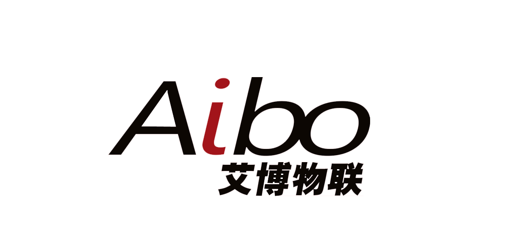
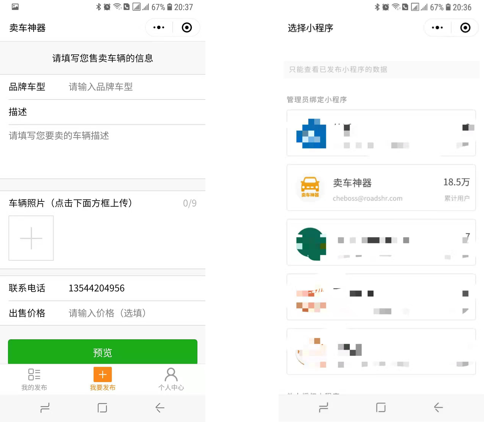
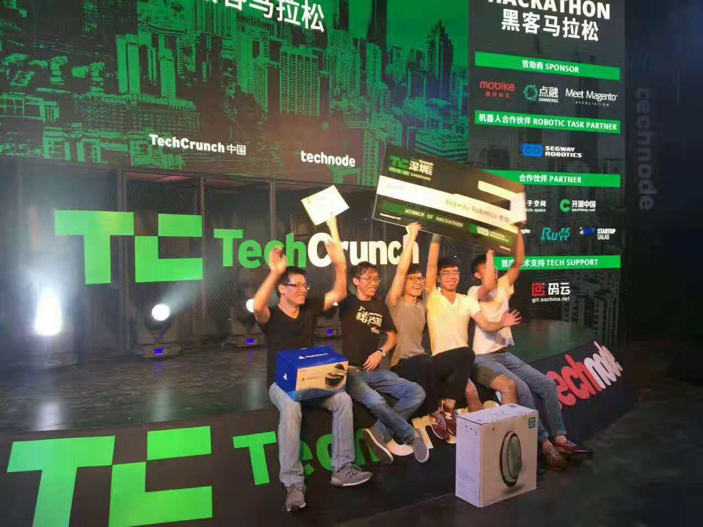

-
- Basic info. 基本信息
- 个人信息: 李孟彬 Ben / 男 / 1990
- 毕业院校: 广东科学技术职业学院计算机系
- 工作年限: 五年
- 常用ID: imrememberlee
- 博客: https://imrememberlee.github.io/
- GitHub: www.github.com/imrememberlee
-
- Experience. 项目与工作经验
深圳无境创新科技有限公司（2017年07月 ~ 至今）
-
深圳无境创新科技有限公司
主要负责深圳无境创新科技有限公司的结算台系统、店铺管理系统和设备管理系统前后端开发及服务器维护
使用 Meteor 应用开发、React框架、MongoDB
目前部署落地稳定运行30家门店，其中包括香港、辽宁等企业方合作门店
-
结算台系统
主要负责前后端开发、对接硬件数据交互和店铺管理系统数据交互
使用 Meteor 应用开发、React框架、MongoDB、RESTful API、pm2 和 MQTT
 -
店铺管理系统
主要负责店铺管理、用户管理和订单管理开发
使用 Meteor 应用开发、React框架、MongoDB、RESTful API、pm2 和 MQTT
 -
设备管理系统
主要负责设备管理系统前后端开发
使用 Meteor 应用开发、React框架、MongoDB、RESTful API、pm2 和 MQTT

深圳前海罗德投资管理有限公司（2015年10月 ~ 2017年07月）
-
深圳无境创新科技有限公司 和 深圳前海罗德投资管理有限公司 是相同的技术团队，由于技术转型，所以公司名称修改了
-
路享 Roadshr
主要负责 TMS（运输管理系统）、路享运输微信公众号开发的前后端开发
使用 Meteor 应用开发、Blaze框架、MongoDB 和 DDP 数据交互
项目与金正大生态工程集团股份有限公司合作，落地了以化肥招投标为核心的管理系统，完成了2000多单招标
 -
运路擎
主要负责 OMS（订单管理系统）、路擎微信公众号开发的前后端开发
使用 Meteor 应用开发、React框架、MongoDB、RESTful API 和 DDP 数据交互
完成关注公众号即可查询、办理车辆外迁，其中系统上，用户数：1262单，运输订单数：297单，外迁订单数：857单，其他业务：501单（开发票，停放业务）

珠海经济特区艾博物联有限有限公司（2014年04月 ~ 2015年05月）
-
万店通
主要负责网站的前端开发，部分后端开发和服务器维护
使用 ThinkPHP3.2 框架和 MySQL 数据库
万店通是一个以优惠卷为载体带动线下消费的电子商务网站。
落地运行10余家门店
彩京有限科技公司（2012年07月 ~ 2014年01月）
-
Dealer（荷官）报表项目
主要负责Dealer（荷官）报表项目的开发维护工作
报表项目主要使用C# .NET桌面应用的水晶报表统计Dealer（荷官）的绩效与统计
其他
-
卖车神器
简单易用的卖车小工具
个人开发的微信小程序，现在用户数已达到18.5万

比赛
-
TCShenzhen Hackathon 深圳站冠军 报道链接 报道链接
黑客马拉松一直是TechCrunch国际创新峰会的经典活动之一，参赛团队在24小时内进行产品策划和开发，最后向公众展示作品，并由专家评审评选出优秀项目。
我们团队选择了Segway Robotics Loomo挑战任务，基于现场的资源打造一款应用于购物场景的机器人，让它辅助用户去shopping。在demo演示环节，我们充分利用了Loomo的Intel RealSense深度感知摄像头和高精度的运动追踪模组，让Loomo变身成一个智能购物篮，随时随地紧跟用户；此外通过对接数据，Loomo还支持更个性化的交互，对于用户选择一些零食还有语音提醒是否有利健康，是否满足当前饮食习惯等等功能。

-
- Skill. 技能清单
前端
-
HTML / CSS
能够编写语义化的 HTML，模块化的 CSS，完成较复杂的布局
熟悉 Less 等CSS预处理和模块化工具
-
JavaScript
熟悉原生 Javascript，能使用ES6、7进行具体开发工作
能运用模块化、面向对象的方式编程
了解 React Vue.js 的使用
-
其他
熟悉 Webpack Gulp 等前端自动化工具
了解前端安全、性能优化方面的一些知识
后端
-
Node.js
了解 Node.js 的开发，使用 MongoDB 和 Redis 做数据存储和缓存，使用 pm2 和 Docker 部署